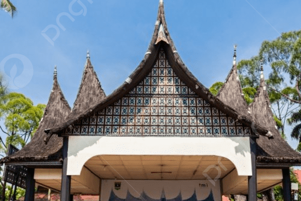

Home
Borobudur
Pantai
Gunung
Taman Mini
Taman Mini

Taman Mini Indonesia Indah (disingkat TMII; sebelumnya Taman Mini "Indonesia Indah" dengan tanda kutip) merupakan suatu taman hiburan bertemakan kebudayaan Indonesia di Jakarta Timur, DKI Jakarta, yang memiliki area seluas kurang lebih 147 hektare atau 1,47 kilometer persegi.[1] Taman ini merupakan rangkuman kebudayaan bangsa Indonesia, yang mencakup berbagai aspek kehidupan sehari-hari masyarakat provinsi Indonesia yang ditampilkan dalam anjungan daerah berarsitektur tradisional, serta menampilkan aneka busana, tarian, dan tradisi daerah.
© Copyright: Situs Wisata | 2026